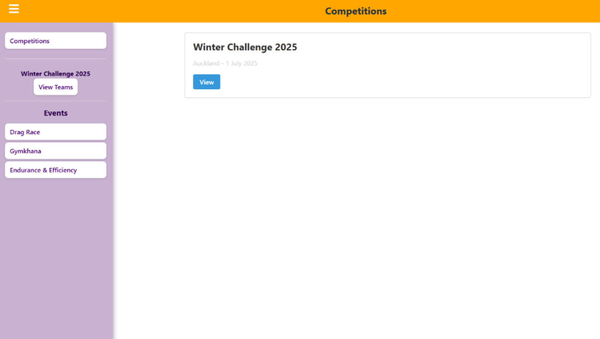
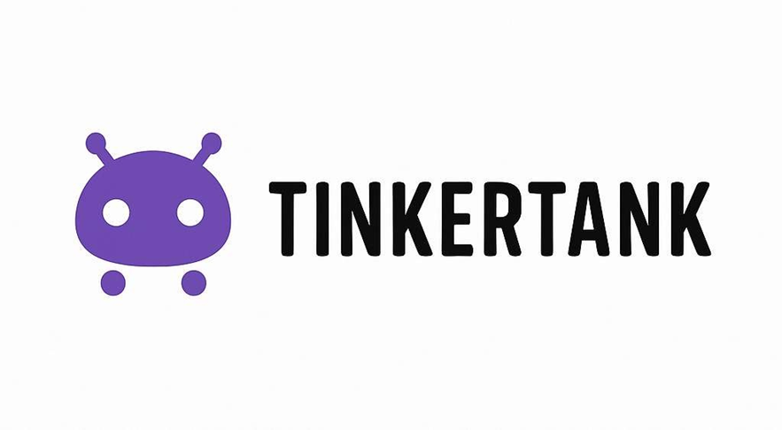

Motion Detection of Bees
2025Designed and fabricated a novel sensor matrix using electrostatic sensors and signal conditioning circuitry to filter noise and track biological motion
Welcome to my personal website, where I share my projects and experiences in the world of technology. Currently I'm looking for graduate opportunities in the field.

Designed and fabricated a novel sensor matrix using electrostatic sensors and signal conditioning circuitry to filter noise and track biological motion

Led the development of a wireless energy monitoring system to replace manual USB data collection, enabling real-time scoring and safety monitoring.

A native Android application marketplace connecting students to buy and sell hobbyist creations.
Supported students in computer systems engineering courses. Facilitated lab sessions and helped students debug hardware and software projects.
Planned and delivered personalized tutoring sessions to students, focusing on improving their understanding of key concepts and academic performance in Math and Science.